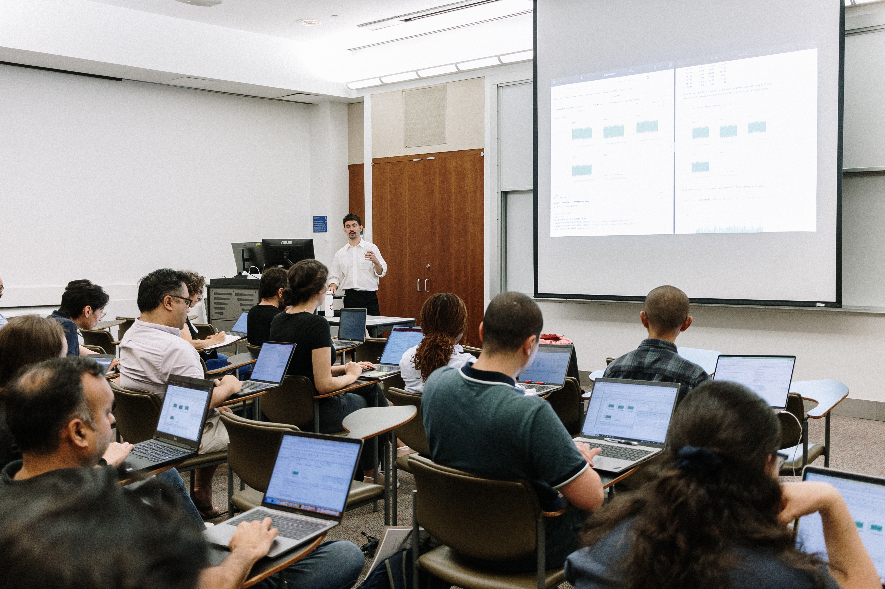

SHARP Bayesian Modeling for Environmental Health Workshop
Overview

The Bayesian Modeling for Environmental Health Workshop is a two-day intensive course of seminars and hands-on analytical sessions to provide an approachable and practical overview of concepts, techniques, and data analysis methods used in Bayesian modeling with applications in Environmental Health.
Official SHARP Bayesian Modeling for Environmental Health Workshop [website link].(https://www.publichealth.columbia.edu/research/programs/precision-prevention/sharp-training-program/bayesian-modeling)
Photos of previous 2023 edition below:

Photos below by April Renae.
